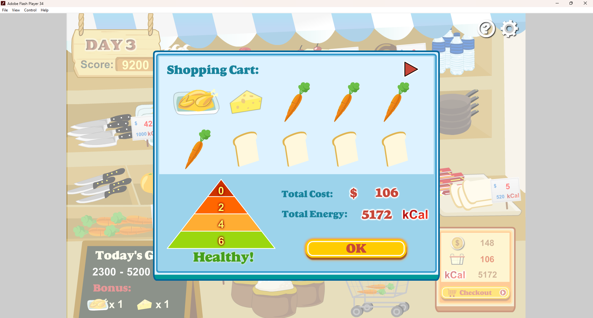
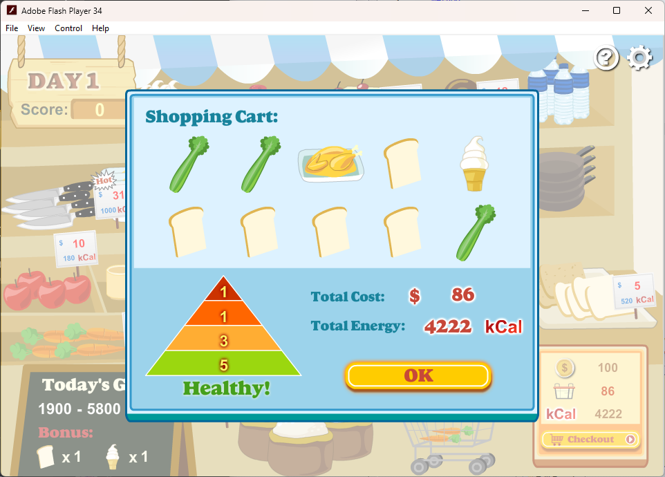

I assume you're here because of this article, so you know the story from Dreaming's side. While his article does state my contributions to finding out what the game considers to be a "healthy" diet, which I highly appreciate, he doesn't really *explain* how I reverse-engineered the game through him screensharing the decompiled ActionScript code, which makes sense, since Dreaming doesn't know read programming languages other than the one Clickteam Fusion uses and also Batch. There could be more, I'm not asking.
This article will walk you through the decompilation process as it happened, beginning with Dreaming streaming the game in a Discord call. He had shown me the game once before, telling me how the game works directly (and not showing me the tutorial screen, I can't fully deny having the "innate gamer desire to not read tutorials", but how am I meant to skip a tutorial when I was unaware of it's existence, Dreaming?). I found the game silly and quirky, and Dreaming had confided in me that no one he ever got to play the game got the (at the time) mythical "Healthy!" text, or had scored the Balanced Diet Score. I remembered this, and knowing Dreaming had a Flash decompiler, I asked him if he could simply decompile the game, read the code, and figure out what classifies as "healthy". Dreaming explains that while he could do that, he wouldn't be able to understand the code, since he doesn't know how to read ActionScript, the language for programming in Flash. This makes me remember a key fact about ActionScript, a fact so useful that it allowed me to understand the code despite the fact that this was my first time ever reading ActionScript.
Computers read binary ones and zeros to process information. This is, astonishingly, not too readable to anything other than a computer. This is why programming languages exist - to abstract the complicated nature of the hardware you're running on and have your program be in a more human-friendly format.
There exists a problem with this though. There are many different ways you can express the same instructions. Compare 6502 Assembly to C to Python to Tetanus.
C
#import <stdio.h> int main() { printf("Hello, world!"); return 0; }
Python
print("Hello, world!")
Tetanus
^(H.+) !\1~ Hello, world!
I won't go into the arguments about language syntaxes (e.g. the fact that C's syntax has become the de-facto standard for any new language), this is to show that just because you know one language, doesn't imply that you will be able to read a different language.
Something that does help, though, is if that different language follows the same style as another language that you do know. If you knew C++, you could look at C code and know what it's doing, to an extent. The same applies to C++ programmers reading C#. The languages are so similar in syntax that you'd be able to get a good idea on control flow, what variables mean what, and other things. Unless you're trying to output text to the console.
Something that would help even more than similar syntaxes would be if there was some sort of standardised programming language, where if you know if a language meets the standard's requirements, you would be able to know the majority of the features of the language, down to the technical quirks.
The ECMAScript Standard is a large document that specifies certain requirements for general purpose scripting languages. It specifies types, operators, libraries and their functions, grammatical syntax, various objects, and a lot more. Like, the PDF version of the standard as of writing this is 816 pages. It's a very broad and deep standard.
You might know the ECMAScript standard because of one very widely-used language that your computer is definitely running right now. JavaScript: the programming language that the internet runs on. Or, the one that you know for being able to write banana in a funny way. Or, the one that can't sort lists correctly.
I have some amount of experience with JavaScript through learning TypeScript, a superset of JavaScript developed by Microsoft to implement type safety into JavaScript. I'd be confident in my abilities if someone pointed a gun to my head and said "Do this LeetCode puzzle in JavaScript!", as long as I had node or a browser console, and the ability to do copious amounts of search engine-ing.
Now that you have the necessary information, this aside can end and I can finally tell you that key fact about ActionScript that I mentioned like, three headings ago.
ActionScript is based off of the ECMAScript standard. See, that tangent wasn't for naught! The reason why I know this fact is really stupid. I told Dreaming this fact, along with a much more condensed version of the stuff I talked about above (there's no way in hell that he would've gave a shit). Something along the lines of "Oh, ActionScript is based off of the ECMAScript standard, which I know a fair bit of. Let me try looking at the code."
Dreaming changes his screenshare to look at the decompiled flash game, and lo and behold: I could understand it. There was, apparently, some minor obfuscation to the game, but the decompiler had automatic deobfuscation tools, which worked amazingly. The code was in a language I knew. Practically no differences. Now, the fun part began:
The first step was obvious. The game uses one word to describe how "healthy" your shopping cart is. These strings must be in the code somewhere! I tell Dreaming to look up the string "Dangerous!" (chosen completely arbitrarily, I think it was what Dreaming just had on the game at the time)
This placed us in the middle of the function that displayed the descriptor on the shopping cart screen.
ActionScript
com.novelgames.flashgames.supergroceryshopper.ShoppingCartPage:142-175
private function updatePyramid() : void { var _loc4_:int = 0; var _loc1_:Array = Object(parent).getFoodRatio(foodArray); var _loc2_:Boolean = Boolean(Object(parent).checkIfBalancedDiet(_loc1_)); var _loc3_:int = getHighestRatioCategory(_loc1_); _loc4_ = 0; while(_loc4_ < _loc1_.length) { pyramid["foodRatio" + _loc4_].text = _loc1_[_loc4_].toString(); _loc4_++; } if(!_loc2_) { switch(_loc3_) { case Food.PYRAMIDLEVEL_ONE: pyramid.status.gotoAndStop("unhealthyYellow"); break; case Food.PYRAMIDLEVEL_TWO: pyramid.status.gotoAndStop("unhealthyOrange"); break; case Food.PYRAMIDLEVEL_THREE: pyramid.status.gotoAndStop("harmful"); break; case Food.PYRAMIDLEVEL_FOUR: pyramid.status.gotoAndStop("dangerous"); } } else { pyramid.status.gotoAndStop("healthy"); } }
Looking through this function, we can spot that it is possible to get "Healthy!". It's not like the game tells you that or anything. The lines of note are:
ActionScript
com.novelgames.flashgames.supergroceryshopper.ShoppingCartPage:145-146,154-174
var _loc1_:Array = Object(parent).getFoodRatio(foodArray); var _loc2_:Boolean = Boolean(Object(parent).checkIfBalancedDiet(_loc1_)); // ... if(!_loc2_) { // ... } else { pyramid.status.gotoAndStop("healthy"); }
To get it, we see that the function checkIfBalancedDiet() needs to return a truthy value, which relies on getFoodRatio(). Due to JPEX's type annotations, we can see that getFoodRatio(), and by extension, _loc1_, are arrays.
So what does getFoodRatio() do? Another text search for this function landed us here:
getFoodRatio().ActionScript
com.novelgames.flashgames.supergroceryshopper.Game:1111-1128
public function getFoodRatio(param1:Array) : Array { var _loc3_:int = 0; var _loc2_:Array = new Array(); _loc3_ = 0; while(_loc3_ < Config.PYRAMIDLEVEL_TOTALNOOF) { _loc2_[_loc3_] = 0; _loc3_++; } _loc3_ = 0; while(_loc3_ < param1.length) { ++_loc2_[param1[_loc3_].pyramidLevel - 1]; _loc3_++; } return _loc2_; }
First things first, we need to clean this up. There's some strange usage of while loops here. Let's step through what this loop actually does.
We first set the variable _loc3_ to be 0, do some stuff, increment _loc3_, then if it is under a certain value, we continue looping. If you have a baseline knowledge of programming, this should be screaming something at you: there's an expression that is run before the loop happens, a condition that is checked before running the loop's contents, and another expression is run before looping.
This is just a for loop! Rewriting the function gives us the easier to read
ActionScript
com.novelgames.flashgames.supergroceryshopper.Game:1111-1128 (modified)
public function getFoodRatio(param1: Array) : Array { var resultant: Array = new Array(); for (var i: int = 0; i < Config.PYRAMIDLEVEL_TOTALNOOF; i++) { resultant[i] = 0; } for (var i: int = 0; i < param1.length; i++) { ++resultant[param1[i].pyramidLevel - 1]; } return resultant; }
Much better! The first loop is easy to understand, we're just setting the resultant array to be filled with a constant number of 0s.
We could use fancy new JavaScript features to make this function even easier to read, since we can collapse the creation of the array and the first for loop into
ActionScript
com.novelgames.flashgames.supergroceryshopper.Game:1113-1120 (modified)
var resultant: Array = new Array(Config.PYRAMIDLEVEL_TOTALNOOF).fill(0);
The second for loop iterates over each element in the array passed into the function, which we can write as a foreach loop.
ActionScript
com.novelgames.flashgames.supergroceryshopper.Game:1121-1126 (modified)
param1.forEach((item) => { resultant[item.pyramidLevel - 1]++; });
So now we just need to know what param1 contains as it's elements, since JPEXS unfortunately does not give a type annotation deeper than Array. We have a good hint though, it's an object or a class with the member pyramidLevel, so it was back to ol' reliable Ctrl+F.
ActionScript
com.novelgames.flashgames.supergroceryshopper.Food:3-35
public class Food extends MovieClip { public static var PYRAMIDLEVEL_ONE:int = 0; public static var PYRAMIDLEVEL_TWO:int = 1; public static var PYRAMIDLEVEL_THREE:int = 2; public static var PYRAMIDLEVEL_FOUR:int = 3; public var type:int; public var price:int; public var calories:int; public var pyramidLevel:int; public function Food() { super(); } public function initialize(param1:int, param2:int, param3:int, param4:int) : void { this.type = param1; this.price = param2; this.calories = param3; this.pyramidLevel = param4; } }
So, it's an extension of a type used in Flash games for the food items. We can see that pyramidLevel takes one of four values (0, 1, 2, or 3).
Now that we know what pyramidLevel means, we can see that the foreach loop simply counts the number of foods in each pyramidLevel. For example, if we had one ice cream, one suger, two celery, and one tomato, it would iterate over each item in the shopping cart, find out there's two sugary foods and three fruits and vegetables, and output [2, 0, 3, 0] to represent this.
checkIfBalancedDiet().ActionScript
com.novelgames.flashgames.supergroceryshopper.Game:1130-1164
public function checkIfBalancedDiet(param1:Array) : Boolean { var _loc3_:Number = NaN; var _loc4_:Number = NaN; var _loc5_:Number = NaN; var _loc6_:int = 0; var _loc2_:int = 0; _loc6_ = 0; while(_loc6_ < param1.length) { _loc2_ += param1[_loc6_]; _loc6_++; } if(_loc2_ == 0) { return false; } _loc6_ = 0; while(_loc6_ < param1.length) { _loc3_ = Number(Config.GAME_BALANCEDIETRANGE[_loc6_][0]); _loc4_ = Number(Config.GAME_BALANCEDIETRANGE[_loc6_][1]); _loc5_ = 100 * param1[_loc6_] / _loc2_; if(_loc5_ > _loc3_) { return false; } if(_loc5_ < _loc4_) { return false; } _loc6_++; } return true; }
Okay, there's a lot here, and a lot of automatically named variables. We can trim down on this by doing the same conversion of while loops to for or forEach loops, along with combining the last two conditionals into one.
ActionScript
com.novelgames.flashgames.supergroceryshopper.Game:1130-1164 (modified)
public function checkIfBalancedDiet(param1:Array) : Boolean { var _loc2_: int = 0; param1.forEach((i) => { _loc2_ += param1[i]; }); if (_loc2_ == 0) { return false; } var _loc3_: Number, _loc4_: Number, _loc5_: Number; for (var i: int = 0; i < param1.length; i++) { _loc3_ = Number(Config.GAME_BALANCEDIETRANGE[i][0]); _loc4_ = Number(Config.GAME_BALANCEDIETRANGE[i][1]); _loc5_ = 100 * param1[i] / _loc2_; if (_loc3_ < _loc5_ || _loc5_ < _loc4_) { return false; } } return true; }
The forEach loop at the start simply counts the number of food items in the cart, since getFoodRatio() outputs the number of items in the cart in a certain category of foods, so summing the number of items in a category would be equal to the total number of items. This means that _loc2_ is just a count of the items in the cart, which would explain the first conditional: if there are no items in the cart, it couldn't be considered a balanced diet. Which makes sense.
ActionScript
com.novelgames.flashgames.supergroceryshopper.Game:1130-1164 (modified)
public function checkIfBalancedDiet(param1:Array) : Boolean { // ... var _loc3_: Number, _loc4_: Number, _loc5_: Number; for (var i: int = 0; i < param1.length; i++) { _loc3_ = Number(Config.GAME_BALANCEDIETRANGE[i][0]); _loc4_ = Number(Config.GAME_BALANCEDIETRANGE[i][1]); _loc5_ = 100 * param1[i] / total; if (_loc3_ < _loc5_ || _loc5_ < _loc4_) { return false; } } return true; }
Now we have three unnamed Numbers. From the name of the static config variable that _loc3_s and _loc4_s get their values from, along with the ifs statement below, it is safe to assume that they are the start and end points of a range. Let's look at Config.GAME_BALANCEDIETRANGE to see what the order is.
ActionScript
com.novelgames.flashgames.supergroceryshopper.Config:5
public static var GAME_BALANCEDIETRANGE:Array = [[55,40],[35,25],[20,10],[10,0]];
Okay, it's a conglomeration of random numbers. Let's prettify it.
ActionScript
com.novelgames.flashgames.supergroceryshopper.Config:5 (modified)
public static var GAME_BALANCEDIETRANGE: Array = [ [55, 40], [35, 25], [20, 10], [10, 0] ];
At this point, I was still confused about what the numbers actually meant - the variable name doesn't actually tell you anything other than the fact that it is a range to do with the balanced iet (or the balance diet), but that didn't really matter right now. I did spend a stupidly long amount of time trying to figure this out by looking at the variable itself, which, not the smartest idea, but it was 11pm or later.
What we do know, however, is that the upper bound of the range is in the zeroth index, while the minimum is in the first, and we can now substitute our variable names for _loc3_ and _loc4_.
And, as a side-tangent, we can also substitute max < _loc5_ || _loc5 < min with !(min <= _loc5_ && _loc5_ <= max), because they are equal, due to De Morgan's laws.
!(min <= _loc5_ && _loc5_ <= max) -> !(min <= _loc5_) || !(_loc5_ <= max) // De Morgan's Law -> min > _loc5_ || _loc5_ > max // Removing !s -> _loc5_ < min || max < _loc5_ // Reordering -> max < _loc5_ || _loc5_ < min
And with those substitutions, we get:
ActionScript
com.novelgames.flashgames.supergroceryshopper.Game:1148-1163 (modified)
var min: Number, max: Number, _loc5_: Number; for (var i: int = 0; i < param1.length; i++) { max = Number(Config.GAME_BALANCEDIETRANGE[i][0]); min = Number(Config.GAME_BALANCEDIETRANGE[i][1]); _loc5_ = 100 * param1[i] / total; if (!(min <= _loc5_ && _loc5_ <= max)) { return false; } } return true;
Now, we still have _loc5_ to rename. The formula immediately rang out to me.
ActionScript
_loc5_ = 100 * param1[i] / total;
param1 is the number of foods in a specific category. Dividing it by the total, and multiplying it by 100? This is just the formula for finding a percentage!
\[ \text{Percentage of items in a category} = 100 \times \frac{\text{# of items in a category}}{\text{Total number of items}} \]
So, _loc5_ is the percentage of food items in a category of the game's food pyramid, giving us
ActionScript
com.novelgames.flashgames.supergroceryshopper.Game:1148-1163 (modified)
var min: Number, max: Number, percentage: Number; for (var i: int = 0; i < param1.length; i++) { max = Number(Config.GAME_BALANCEDIETRANGE[i][0]); min = Number(Config.GAME_BALANCEDIETRANGE[i][1]); percentage = 100 * param1[i] / total; if (!(min <= percentage && percentage <= max)) { return false; } } return true;
Something I've swept under the rug here is that you, the reader, have the luxury of me rewriting the code for you. In this readable state, it's a lot clearer to see what the code is doing. I, however, had stared at the unaltered code for a pretty long time before working out what was happening. If you need a reminder, go to the start of this section.
Recall our "lines of note" from the start of this journey.
ActionScript
com.novelgames.flashgames.supergroceryshopper.ShoppingCartPage:145-146,154-174
var _loc1_:Array = Object(parent).getFoodRatio(foodArray); var _loc2_:Boolean = Boolean(Object(parent).checkIfBalancedDiet(_loc1_)); // ... if(!_loc2_) { // ... } else { pyramid.status.gotoAndStop("healthy"); }
Your diet is considered "healthy" as long as checkIfBalancedDiet() returns true, which happens when the percentage of foods per category matched a range specified by this config variable.
ActionScript
com.novelgames.flashgames.supergroceryshopper.Config:5 (modified)
public static var GAME_BALANCEDIETRANGE: Array = [ [55, 40], // Grains [35, 25], // Fruits & Vegetables [20, 10], // Animal Products [10, 0] // Sugary and Oily ];
So, as long as your shopping cart contains 40%-55% grains, 25%-35% fruits and/or vegetables, 10%-20% animal products, and 0-10% sugary and oily foods, the diet is considered "balanced", and therefore, healthy.
Now, time to crunch the numbers and see if I was correct in my reverse-engineering.
There are a lot of cases that can be met, but I had initially started with the case of having no sugary or oily foods, and one animal product, which I solved through a brute-force-like approach.
Since animal products must be within the range of 10%-20%, through some number crunching, I found that to get within the range is to have 1 animal product out of 6 total items, since \(\frac{1}{6} \approx 17\%\). My next guess was 3 grains, since it had to be around half of the cart, and \(\frac{3}{6} = 50\%\). That leaves us with 2 fruits and vegetables, because \(\frac{2}{6} \approx 33\%\). Checking against the conditions of checkIfBalancedDiet() gives us
\[ \begin{align*} \text{Sugary, Oily:} && 0\% \leq \frac{0}{6} \leq 10\% \checkmark\\ \text{Animal Products:} && 10\% \leq \frac{1}{6} \leq 20\% \checkmark\\ \text{Fruit, Vegetables:} && 25\% \leq \frac{2}{6} \leq 35\% \checkmark\\ \text{Grains:} && 40\% \leq \frac{3}{6} \leq 55\% \checkmark\\ \end{align*} \]
Well, it seems to work on paper. Let's try it in the game!

It worked. My reverse engineering worked!
This also applied to any multiple of the ratio 0:1:2:3, since the percentages would be identical.
Next up, having one sugary or oily food, since the game required Dreaming to pick up an ice cream from the store in order to get bonus points.
The maximum for sugary and oily foods is 10%, meaning that for one sugary/oily food, you would need nine other foods to get within this range, since \(\frac{1}{10} = 10\%\). Grains had to take up the majority of the items, and either 4 or 5 grain products would have worked with the range of 40%-55%, but I went with 5 initially, giving us 50% grains, and 4 items left to work with. Fruits and vegetables needed to take up 25%-35% of the cart, which means I was forced into including 3 fruits and/or vegetables in the cart, since \(\frac{3}{10} = 30\%\), and that was the only value within the range, leaving us with 1 animal product, which makes it 10% of the cart. Checking against the conditions...
\[ \begin{align*} \text{Sugary, Oily:} && 0\% \leq \frac{1}{10} \leq 10\% \checkmark\\ \text{Animal Products:} && 10\% \leq \frac{1}{10} \leq 20\% \checkmark\\ \text{Fruit, Vegetables:} && 25\% \leq \frac{3}{10} \leq 35\% \checkmark\\ \text{Grains:} && 40\% \leq \frac{5}{10} \leq 55\% \checkmark\\ \end{align*} \]
This also worked. It wasn't just a fluke the first time.
The last bit of number crunching I did on the night was when Dreaming was required to get 3 fruits and vegetables to pick up a bonus. I started with assuming 10 items in the cart, since 30% of the cart being fruits and vegetables fit within the "healthy" range. Grains took up half of the cart again, taking 5 of the 10 spots, and animal products taking the last 2 of 10 spots. Sugary/oily food was to be avoided, since the constraint it provided when even *one* was in the cart was too much to work with, given the calorie and budget requirements.
Checking against the conditions gives us
\[ \begin{align*} \text{Sugary, Oily:} && 0\% \leq \frac{0}{10} \leq 10\% \checkmark\\ \text{Animal Products:} && 10\% \leq \frac{2}{10} \leq 20\% \checkmark\\ \text{Fruit, Vegetables:} && 25\% \leq \frac{3}{10} \leq 35\% \checkmark\\ \text{Grains:} && 40\% \leq \frac{5}{10} \leq 55\% \checkmark\\ \end{align*} \]

Another hit. I think it is safe to say that my reverse engineering efforts were not in vain.
For the first time I looked at decompiled code with an actual understanding of how things worked, this was a fun way to pass the time for a late December night. It was a good puzzle, trying to find things that fit patterns that I, as a programmer, had used frequently. It's not all too often that you get to do what you normally do but in reverse.
And the payoff for the work? Super rewarding. Comparable to when a project you've been working on is finally in a functional state after some time. (seriously, my commits on "functional" pushes are always celebratory)
It also told me that learning about the deeper complexities of coding and computer science in general is not a bad thing. I wouldn't've taken this on if it weren't for the fact that I had heard of ActionScript as an implementation of ECMAScript.
And for Dreaming? Well, he now knows how to eat healthily (is that a word?), and had his yaoi organised. So we all won in this situation.
Last modified at 21:06 GMT+10 on 30/12/2024.